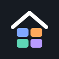

Privacy policy
FamilyHub is a wall screen for one household. Only that household's Google account signs in to it. This page says what it reads from Google, where that goes, and how to stop it.
What it reads from Google
FamilyHub asks Google for these permissions, and uses each one only for what's listed:
-
Google Calendar, read only (
calendar.readonly): to show the household's Events. It never changes or adds an Event. -
Google Tasks (
tasks): to show the Shopping list and the To-dos, and to add, tick off and remove items on them. -
Google Drive, only its own files (
drive.file): to save a nightly backup of the Hub's own data in a "FamilyHub backups" folder. It can't see any other file in the Drive. -
Nest thermostat (
sdm.service), if it's connected: to show the room's temperature and whether the heating is on, and to change the thermostat's temperature.
It doesn't ask for or use contacts, email, photos, location, or anything else in the account.
Where it's kept
- Everything is read by the Raspberry Pi in the house and shown on its screen. Nothing on the Pi can be reached from the internet.
- The Hub's own data, such as the Chores and its settings, stays on the Pi, with a nightly backup in the household's own Google Drive, as above.
- The Google sign-in is kept only on the Pi. The app's own Google credentials, which aren't anyone's data, are kept in a key vault in the household's own Microsoft Azure subscription.
- Diagnostic logs go to the household's own Azure subscription, with anything personal, such as Event titles or names, removed before they leave the house.
Who sees it
Only the household. FamilyHub doesn't sell, share or give Google data to anyone, doesn't use it for advertising, and doesn't use it to train AI models. Its use of data from Google APIs follows the Google API Services User Data Policy, including the Limited Use requirements.
Removing its access
Go to your Google account's third-party connections, choose FamilyHub, and remove its access. For the Nest, also remove it in the Google Home app or at nestservices.google.com/partnerconnections. The Hub then stops reading anything. Backups it made stay in the Drive's "FamilyHub backups" folder until they're deleted there.
Questions
FamilyHub is run by Ross Graham. Get in touch through github.com/rosskgraham. The code is open source at github.com/rosskgraham/FamilyHub, so anyone can check what it does.